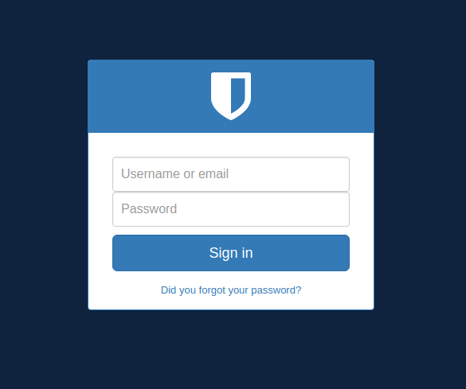

Welcome to Wiggum
Wiggum is an open source authentication & authorization (auth) centralized system, The aim of wiggum is to allow users to login once and authenticate in all your aplications based on JWT standard and cookies. Also has an authorization system based on permissions that applications can check with its API.

Wiggum is a Django project, if you already know how Django works then setting up and running will be very easy, wiggum is very easy to customize as you will see in customization section.
At this moment Wiggum can do a little bit more than login and logout:
- Login
- Logout
- JWT based authentication
- User, apps & permission models and API
- Admin panel
- Login/logout endpoints
- Default theme (clancy)
- Password reset links (expiration included)
- SFA (Single factor authentication) login with a link
- Theme selector based on ID, theme name or appID
- Redirect param on important URIs like login or logout
- Dev and CI environment based on docker and docker compose
- Impersonation of users
- JWT versioning (used for invalidation)
- JWT transition keys (two valid jwt keys at a time)
- Prometheus metrics